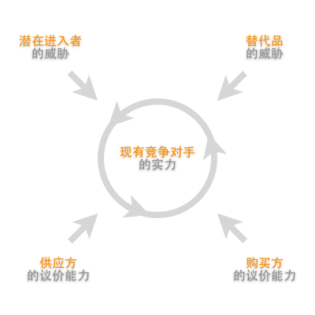

上回《竞争的本质》说到，当推出一个方案或服务的时候，所需要理解认清的市场真正本质和残酷现实。
一些初创团队或对市场缺乏深刻领悟的所谓谘询顾问，往往缺乏经验和全局观，因而太集中于站在自身角度并只针对以解决问题和功能实现为方向，导致方案本身没有策略的支撑而站不住脚。
那，面对这弱肉强食的市场生态，纵使我们浮现一个概念，那又该怎样做才能实现并在这剧烈竞争中生存？
顾名思义，真正的策划该是怎样做？
什么是策划？
坊间一直不乏让您分析业务或市场的方法。懂得做USP，4P，4C，SWOT，Business Model Canvas，波特5力等各种理论方法，又或是熟用BCG和麦肯锡的7S模型，就是代表懂得策划吗？
不得不吐嘈一下，可能更多是国内的一种普遍风气习性吧，比较热衷于学习各种方法论，但发现也有不少的所谓专家，比较倾向形式化的机械模仿，生搬硬套，缺乏深刻埋解的「形式化方法论书院派学者」。
但其实，要是没有细心思考背后的原理，并跟据自己的认知理解去把各种方法融汇贯通，转化成属于自己的一套看法理念的话，那你做出来的所谓结论其实也只会是流于表面，充其量只能摆摆姿态忽悠别人而已。因为每次我们面对的状况都会略有不同，需要作出适当调节，并非千篇一律。
策划，更多是思考自身所能容身的位置问题
所谓策划，着眼点和关键其实都不在于你要想出什么方法，而是更多是反过来思考自身所能容身的位置：通过深刻理解行业环境和竞争对手情况，洞悉市场趋势再而精准抓准切入市场的缝隙缺口。
通过深刻理解行业环境和竞争对手情况，洞悉市场趋势再而精准抓准切入市场的缝隙缺口
或许，以下我运用一个我自己比较爱用的波特5力模型，通过个案去说明一些比较需要注意的细节吧…
寻找位置的游戏
波特5力模型，简单来说是用来描述一个行业的竞争状况。一个业务处身于一个行业之内，都会受到供应方的议价能力、购买方的议价能力、潜在进入者的威胁、替代品的威胁，以及现有竞争对手的实力这五个方面的「力量」所影响，从而理解业务本身在行业内的营利能力和影响力。

就以上图为例，其中一个IT创业概念往往常犯的错误，就是在SWOT等分析上认为商品的成功主要有赖于功能和技术是竞争中存在绝对性的优势。没错技术门槛或许可在同业竞争取得优势，并有效阻止外来潜在竞争者进入市场，但：
- 同业竞争 Rivalry
同业的竞争是全方位的，不只在技术上，尤其初创团队缺乏市场的话语权，竞争往往不是跟着自己的方向去斗 - 潜在竞争 New Entrants
外来竞争者还是照样可以通过收购和各种手段为目的进入市场 - 购买方 Buyers
就算功能超卓，若没有渠道或有效策略进占市场，也是徒然 - 供应方 Suppliers
若业务的实现需要依赖内容或其他资源，确定持久供应的同时也有效控制所需成本将会是业务一直所需要面对的巨大挑战 - 替代方 Substitutes
能取代您的服务和商品，远超乎您所想像。就以手机游戏为例，除了同业竞争外，其实所有消磨时间的手段也皆可成为您的替代品
其实还未考虑到市场是否饱和或足够吸引，政策引致行业改变等种种因素！然而，要是身处的是IT行业，潜在的竞争者，永远也都会有腾讯、阿里巴巴、百度等互联网巨头的踪影在磨刀霍霍在等待着合适的时机。
So…足够感受到竞争的残酷现实不？
因此，与其想我能怎么勇猛，怎么改造这个世界，不如先实在点，想想怎样运用您现有手头上的仅有资源，该怎样好好准备打一场又一场的硬仗。
也许大家看到这里，可能顿然感到迷茫绝望…看到这么严峻的环境，面对这么强大的对手，还会有什么机会留给我们吗？
一个成功的策略，往往就是寻找到人家不为意的机会
对！我觉得就是这个思路的改变！一个成功的策略，往往就是寻找到人家不为意的机会。通过洞悉市场趋势和独特见解，从而物识当中潜在脱变的行业，寻找当中没被开发的潜在空间和缝隙，并跟据企业身处的位置及能力选取最合适的经营手段。
那…策划具体是怎么做的?
或许下周我尝试通过一些案例，运用以上模型一一详说吧.. :p
| ＜上一篇 | 下一篇＞ |